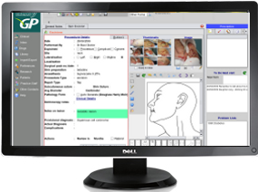

Hardware and OS
Basic requirements for running EasyGP are
- IBM PC compatible desktop or laptop pc.
- Any modern linux distribution preferably ARCH linux, Debian or Redhat
- Widescreen monitor preferred but not essential

EasyGP has been designed to take advantage of the screen width of a modern widescreen monitor but will run quite
happily on your laptop.